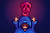

Luck

Luck  is a statistic that affects many different aspects of the game, such as the chance of finding geodes and chance of getting treasure from Fishing. There are several sources of luck: daily luck determined by the game, buffs gained from eating certain food and drink, a Special Charm which gives a small permanent luck boost, and the Lucky Ring.
is a statistic that affects many different aspects of the game, such as the chance of finding geodes and chance of getting treasure from Fishing. There are several sources of luck: daily luck determined by the game, buffs gained from eating certain food and drink, a Special Charm which gives a small permanent luck boost, and the Lucky Ring.
Daily Luck
The base value for daily luck is a randomly generated number from -0.1 (unlucky) to 0.1 (lucky).[1] The value is increased by 0.025 with the Special Charm. The value is used in numerous ways; though it looks like a percentage equal to 10%, it is in fact treated differently in every situation and may have a minuscule or enormous effect depending on the activity.
Daily luck can be checked by right-clicking on the Television and selecting "Fortune Teller." The Fortune Teller will give an indication of the daily luck stat modifier. Luck is determined at the start of the day and is not affected by choosing to view the Fortune Teller Television Program. Daily luck does not change if the day is restarted, but it can change by replaying the previous day.
Before revealing the luck message, one of the following messages is shown randomly (the first two being gender-specific). They do not affect the luck in any way.
| “ | “Ah... I sense that a new viewer has joined us. A young man from... Stardew Valley? Welcome, welcome!” |
| “ | “Ah... I sense that a new viewer has joined us. A young lady from... Stardew Valley? Welcome, welcome!” |
| “ | “Ah... yes, I can hear the spirits whispering something to me... ” |
| “ | “Welcome back to 'Welwick's Oracle'... If you seek hidden knowledge of the future, well you've come to the right place.” |
| “ | “Hoo.. I see a glimmer within my scrying orb... A shard of knowledge from the future!” |
| “ | “Welcome to Welwick's Oracle... the ONLY show where the voice of the spirits is channeled directly... to YOU.” |
| Message | TV Display | Stat Bonus [2] |
|---|---|---|
| The spirits are very happy today! They will do their best to shower everyone with good fortune. | ||
| The spirits are in good humor today. I think you'll have a little extra luck. | ||
| The spirits feel neutral today. The day is in your hands. | ||
| This is rare. The spirits feel absolutely neutral today. | ||
| The spirits are somewhat annoyed today. Luck will not be on your side. The spirits are somewhat mildly perturbed today. Luck will not be on your side. |
||
| The spirits are very displeased today. They will do their best to make your life difficult. | ||
 |
Daily luck has 201 possible values[1], so the probability of getting best possible luck, worst possible luck, and absolutely neutral luck are 1/201 each. Due to a rounding error in the game code, it's impossible to get absolutely neutral luck with the Special Charm[3].
Special Charm
After reading Secret Note #20 and solving the puzzle depicted, the player is awarded with a Special Charm that permanently increases daily Luck by 0.025.
Daily Luck Effects
Daily luck affects the following:
- Chance to discover ladders from breaking rocks while Mining.
- Geode and coal drop chance from rocks.
- Chance of finding Gem Nodes and Mystic Stones in The Mines or Skull Cavern.
- Chance that crates spawn in the Mines.
- Chance to find treasure rooms in the Skull Cavern.
- Amount of gold and items lost when dying in the Mines or Skull Cavern.
- Chance of finding Radioactive Nodes in the Mines (while the Shrine of Challenge is active) or Skull Cavern (while Skull Cavern Invasion is active).[4]
- Chance of treasure chests appearing while Fishing.[5]
- Chance of treasure chest being golden once Fishing Mastery has been claimed.[5]
- Chance of getting Mystery Boxes or Golden Mystery Boxes from treasure chests.[6]
- Chance of getting special items (e.g., Neptune's Glaive, Prismatic Shard, Iridium Band) from treasure chests.[6]
- Chance of receiving a higher quantity of roe from treasure chests after obtaining the power from the Jewels Of The Sea.[6] (The base chance of obtaining roe stays constant at 25%.)
- Chance of hooking a Woodskip on the Forest Farm.[7]
- Other
- Chance of obtaining a Prismatic Shard from the Blessing Of The Butterfly.
- Chance of obtaining a Golden Animal Cracker from Artifact Spots, shaking trees with seeds, chopping trees, breaking crates and barrels in the Mines, Skull Cavern, and Volcano Dungeon, and slaying monsters after claiming Farming Mastery.[8]
- Chance to double the number of crops yielded at harvest. Works for any crop, and a unique "dwoop" sound effect plays if this occurs as the result of a luck-based check.[9]
- Chance of obtaining Trinkets from slaying monsters or breaking crates and barrels in the Mines, Skull Cavern, or Quarry Mine after claiming Combat Mastery.[10]
- Chance of receiving Duck Feather and Rabbit's Foot from Ducks and Rabbits.
- Amount of wood dropped from trees.
- Quality and number of ores obtained from panning.
- Chance of getting a second item (in addition to ore) from panning.
- Chance of getting items from Garbage Cans and the chance the item is not trash.
- Chance the spouse will be jealous after giving a gift to another marriage candidate that the player is also currently dating.
- Results of playing slots at the Casino.
- Amount of lightning during a storm. Higher luck increases the amount.[11]
- Chance of a tree being struck by lightning. Higher luck decreases the chance.[11]
Luck Buffs
Luck Buffs are temporary bonuses gained from:
- consuming certain food and drink
- consuming dishes from the Chef at the Desert Festival
- wearing the Lucky Ring
- receiving the Blessing of Luck buff from the Statue Of Blessings
Only one drink-derived buff and one food-derived buff can be active at a given time. However, dishes from the Chef at the Desert Festival can stack on top of the food and drink buffs, which includes any luck buffs potentially received from the dishes. A buff of +2 for example may have similar effects to a daily luck value of 0.1, though it is treated differently in every situation and may have a minuscule or enormous effect depending on the activity.
The following food and drink provide a temporary luck buff:
| Image | Name | Description | Ingredients | Energy / Health | Buff(s) | Buff Duration | Recipe Source(s) | Sell Price | |||
|---|---|---|---|---|---|---|---|---|---|---|---|
| Banana Pudding | A creamy dessert with a wonderful tropical flavor. |
|
for |
||||||||
| Fried Eel | Greasy but flavorful. |
|
|||||||||
| Ginger Ale | A zesty soda known for its soothing effect on the stomach. | Dwarf Shop in Volcano Dungeon for |
|||||||||
| Lucky Lunch | A special little meal. |
|
|||||||||
| Pumpkin Soup | A seasonal favorite. |
|
|||||||||
| Shrimp Cocktail | A sumptuous appetizer made with freshly-caught shrimp. |
|
|||||||||
| Spicy Eel | It's really spicy! Be careful. |
|
|||||||||
| Magic Rock Candy | A rare and powerful candy infused with the essence of the prismatic shard. | N/A | N/A | ||||||||
| Cave Jelly | A rare jelly found in underground lakes. | N/A | N/A |
The following ring gives a luck buff:
| Image | Name | Description | Effect | Where to Find | Ingredients | Purchase Price | Sell Price |
|---|---|---|---|---|---|---|---|
| Lucky Ring | The lunar emblem is said to bring good luck to whoever wears it. | Increases |
Dropped as a special item in the Skull Cavern, or rarely by panning. | N/A | N/A |
Below is a table of the luck buffs that can be obtained from the Chef at the Desert Festival:
| Image | Name | Buffs | Buff Duration | Ingredients |
|---|---|---|---|---|
| Sour Salad | Rare Fruit + Rich Marinara | |||
| Superfood Cake | Rare Fruit + Mushroom Creme | |||
| Warrior Smoothie | Rare Fruit + Pungent Garlic | |||
| Rumpled Fruit Skin | Rare Fruit + Uncomfortably Hot Sauce | |||
| Sweet Bean Cake | Hearty Beans + Cherry Syrup | |||
| Crystal Cake | Cave Loaf + Cherry Syrup | |||
| Elf Quesadilla | Extremely Sharp Cheddar + Cherry Syrup | |||
| Shrimp Donut | Shrimp + Cherry Syrup |
Luck Buff Effects
Luck buff effects are very similar to daily luck effects. However, total luck buff is treated separately from total daily luck, and the effects of the two types of luck are not the same. The types of events affected by luck buffs are different, and for events affected by both, the magnitude of the effect can be very different.
Luck buffs affect the following:
- Everything listed in the Daily Luck Effects section, except:
- Chance of receiving Duck Feather and Rabbit's Foot from Ducks and Rabbits.
- Chance of hooking a Woodskip on the Forest Farm.
- Chance of obtaining a Prismatic Shard from the Blessing Of The Butterfly.
- Chance of obtaining a Golden Animal Cracker after claiming Farming Mastery.
- Chance of a Fishing Treasure Chest being golden after claiming Fishing Mastery.
- Chance of getting special items and Mystery Boxes/Golden Mystery Boxes and chance of receiving a higher quantity of roe from Fishing Treasure Chests.
- Chance of finding Gem Nodes and Mystic Stones in The Mines or Skull Cavern.
- Chance of getting double quantities of resources and gems from Fishing Treasure Chests. Luck buffs also allow standard rings (Glow Ring and Magnet Ring) to appear in place of small rings (Small Glow Ring and Small Magnet Ring).[6]
- Chance of hooking Sea Jelly, River Jelly, and Cave Jelly.[12]
- Chance of obtaining extra Cinder Shards, Bone Fragments, Clay, Stone, and all Ore from stones.[13]
- Weapon Crit. Chance.[14]
- Chance of activating the Ring of Yoba and Warrior Ring.[15][16]
- Chance of finding certain modified monster drops, including Mahogany Seed, Galaxy Soul, and Qi Gem.[17]
Trivia
The maximum possible luck is a daily luck of 0.125 with the lucky charm and maximum luck and a buff of +10.
References
- ↑ 1.0 1.1 See Game1::_newDayAfterFade in the game code.
- ↑ See TV::getFortuneForecast in the game code.
- ↑ The special charm adds (double)0.025f (see Farmer::DailyLuck), which is actually 0.02500000037252903. Those trailing digits are never cancelled out as the TV code checks whether the daily luck is exactly zero as a double.
- ↑ See MineShaft::chooseStoneType in the game code.
- ↑ 5.0 5.1 See FishingRod::startMinigameEndFunction in the game code.
- ↑ 6.0 6.1 6.2 6.3 See FishingRod::openTreasureMenuEndFunction in the game code.
- ↑ See Data\Locations.xnb in the game files.
- ↑ See Utility::trySpawnRareObject in the game code.
- ↑ See Crop::Harvest in the game code.
- ↑ See Trinket::TrySpawnTrinket, GameLocation::monsterDrop, and BreakableContainer::releaseContents in the game code.
- ↑ 11.0 11.1 See Utility::performLightningUpdate in the game code.
- ↑ See Data\Locations.xnb in the game files and MineShaft::getFish in the game code.
- ↑ See GameLocation::breakStone in the game code.
- ↑ See GameLocation::damageMonster in the game code.
- ↑ See Farmer::takeDamage in the game code.
- ↑ See Ring::onMonsterSlay in the game code.
- ↑ See GameLocation::monsterDrop in the game code.
History
- 1.3.27: Officially added Special Charm to the game. Treasure rooms added to Skull Cavern, which are affected by luck.
- 1.4: Magic Rock Candy introduced. Special Charm luck increase changed to a static 0.025. Giving datable NPCs a gift no longer makes the player's spouse jealous unless they're currently dating them.
- 1.5: Lucky Ring, Banana Pudding, and Ginger Ale introduced.
- 1.6: Luck buffs from Chef dishes at the Desert Festival introduced. Added special backplates to fortune teller TV show if the player gets a perfectly good or perfectly bad luck day. Jellies are now affected by Luck Buffs and chances of obtaining a Prismatic Shard from the Blessing Of The Butterfly now affected by daily luck. Drop chance of Trinkets affected by luck.
| Skills & Stats | |
|---|---|
| Skills | Farming • Mining • Foraging • Fishing • Combat |
| Stats | Attack • Crit. Chance • Crit. Power • Defense • Immunity • Luck • Magnetism • Speed • Weight |